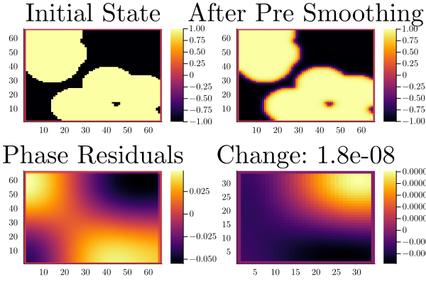
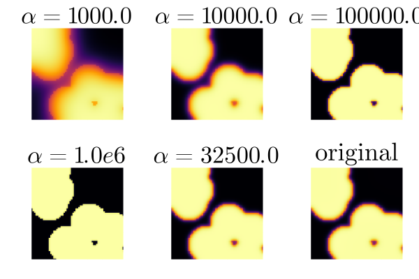
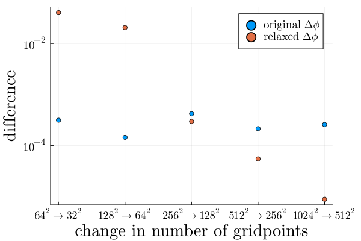

Bachelor Thesis
Table of Contents
This thesis follows reproducible research philosophy, in that we provide all relevant code in the same file as the writing itself. We then use this file to generate exports to html and PDF, as well as extract the code to be used independently. Further details on execution and reading of the original source provided in org-mode format,
1. The Cahn-Hilliard equation
The Cahn-Hilliard(CH) equation is a partial differential equation (PDE) solving the state of a two-phase fluid(Wu 2022). The form of the CH equation used in this thesis is
\begin{equation} \label{org11ce745} \begin{aligned} \partial_{t}\phi(x,t) &= \nabla \cdot(M(\phi)\nabla\mu) \\ \mu &= - \varepsilon^2 \Delta\phi + W'(\phi) \end{aligned} \end{equation}where, \( \phi\) is a phase-field variable representing the different states of the fluids through an interval \(I=[-1,1] \)
\begin{align*} \phi &= \begin{cases} 1 &\,, \phi = \text{phase 1} \\ -1 &\,, \phi =\text{ phase 2} \end{cases} \end{align*}\(\varepsilon\) is a positive constant correlated with boundary thickness and \(\mu\) is the chemical potential(Wu 2022).
In this thesis we assume \(M(\phi) \equiv 1 \), simplifying the CH equation used in (Wu 2022) (Shin, Jeong, and Kim 2011).
The advantages of the CH approach, as compared to traditional boundary coupling, are for example: “explicit tracking of the interface” (Wu 2022), as well as “evolution of complex geometries and topological changes […] in a natural way” (Wu 2022). In practice it enables linear interpolation between different formulas on different phases.
1.1. Derivation from paper
1.1.1. The free energy
The authors in (Wu 2022) define the CH equation using the Ginzburg-Landau free energy equation:
\begin{align} \label{org3dc641f} E^{\text{bulk}} &= \int_{\Omega} \frac{\varepsilon^2}{2} |\nabla \phi |^2 + W(\phi) \, dx \end{align}where \(W(\phi) \) denotes the Helmholtz free energy density of mixing (Wu 2022) that we approximate it in further calculations with \(W(\phi) = \frac{(1-\phi ^2)^2}{4}\) as in (Shin, Jeong, and Kim 2011). Additionally \( \nabla\phi \) represents the change in phase-field.
The chemical potential, \( \mu \), then follows as the variational derivation of the free energy \eqref{org3dc641f}.
\begin{align*} \mu &= \frac{\delta E_{bulk}(\phi)}{\delta \phi} = -\varepsilon^2 \Delta \phi + W'(\phi) \end{align*}1.1.2. Derivation of the CH equation from mass balance
The paper (Wu 2022) motivates us to derive the CH equation as follows:
\begin{equation} \label{org3178581} \partial_t \phi + \nabla \cdot J = 0 \end{equation}where \( J \) is mass flux. The equation \eqref{org3178581} then ensures continuity of mass Using the no-flux boundary conditions:
\begin{align} J \cdot n &= 0 & \partial\Omega &\times (0,T)\\ \partial_n\phi &= 0 & \partial\Omega &\times (0,T) \end{align}conservation of mass follows see(Wu 2022).
\begin{equation} \label{org47129cb} \begin{aligned} \frac{d}{dt}\int_{\Omega}\phi&=\int_{\Omega}\frac{\partial \phi}{\partial t} dV \\ &= - \int_{\Omega} \nabla \cdot J \ dV\\ &= \int_{\partial\Omega} J \cdot n \ dA \\ &= 0 \end{aligned} \end{equation}Therefore mass is conserved over time, as shown in \eqref{org47129cb}. We define the mass flux, \( J \), as the gradient in chemical potential as follows
\begin{align} J &= - \nabla \mu \end{align}This results in the CH equation as stated in \eqref{org11ce745}.
\begin{equation} \label{org539a963} \begin{aligned} - \nabla \mu &= 0 \\ \partial_n \phi &= 0 \end{aligned} \end{equation}i.e. no flow leaves and potential on the border doesn’t change. In order to show the CH equation’s consistency with thermodynamics we take the time derivation of the free energy \eqref{org3dc641f} and we show that it decreases in time.
\begin{align*} \frac{d}{dt}E^{bulk}(\phi(t)) &= \int_{\Omega} ( \varepsilon^2 \nabla \phi \cdot \nabla \partial_t \phi + W'(\phi) \partial_t \phi) \ d x \\ &=\int_{\Omega} (\varepsilon^2\nabla\phi + W'(\phi))\partial_t\phi \ dx\\ &=\int_{\Omega} \mu \partial_t \phi \ dx\\ &= \int_{\Omega} \mu \cdot \Delta\mu \ dx \\ &= -\int_{\Omega} \nabla\mu \cdot \nabla\mu \ dx + \int_{\partial\Omega} \mu \nabla\phi_t \cdot n \ dS \\ &\stackrel{\partial_n\phi = 0}{=} - \int_{ \Omega } |\nabla \mu|^2 \ d x, & \forall t \in [0,T) \end{align*}2. Baseline multi-grid solver
As baseline for numerical experiments we use a two-grid method based on the finite difference method defined in (Shin, Jeong, and Kim 2011).
2.1. The discretization of the CH equation:
Our discretization closely resembles the one taken by the authors in (Shin, Jeong, and Kim 2011). We discretize our domain \( \Omega \) to be a Cartesian-grid on a square with side-length \( N\cdot h \), where N is the number of grid-points in one direction, and \( h \) is the distance between grid-points. In all our initial data \( h \) is \( 3\cdot10^{-3}\) and \( N=64 \) for all, but in the stability tests in space. We discretize the phase-field ,\( \phi \), and chemical potential ,\( \mu \), into grid-wise functions \(\phi_{ij}, \mu_{ij} \), where \( \phi_{ij} \) represents the evaluation of \( \phi \) at index \( ij \) , and at coordinates \( (i\cdot h -1 , j\cdot h - 1) \). The authors in (Shin, Jeong, and Kim 2011) use the characteristic function \( G \) of the domain \( \Omega \) to enforce no-flux boundary conditions.
\begin{align*} G(x,y) &= \begin{cases} 1, & (x,y) \in \Omega \\ 0, & (x,y) \not\in \Omega \end{cases} \end{align*}We implement the discretized function on our square domain as follows.
\begin{align*} G_{ij} &= \begin{cases} 1, & (i,j) \in [2,N+1]^2 \\ 0, & \text{else} \end{cases} \end{align*}the domain we calculate on is therefore a square starting at \( (2,2) \) and ending at \( (N+1,N+1) \). We use this shifted square to accommodate for zero padding in our numerical implementation.
function G(i, j, len, width) if 2 <= i <= len + 1 && 2 <= j <= width + 1 return 1.0 else return 0.0 end end
We then define the partial derivatives \( D_x\phi_{ij}, \ D_y\phi_{ij} \) using centred differences:
\begin{align} D_x\phi_{i+\frac{1}{2} j} &= \frac{\phi_{i+1j} - \phi_{ij}}{h} & D_y\phi_{ij+\frac{1}{2}} &= \frac{\phi_{ij+1} - \phi_{ij}}{h} \end{align}For \( \nabla_d \phi_{ij}, \nabla_d \cdot (G_{ij} \nabla_d \phi_{ij} )\) then follows:
\begin{align} \label{org604dca6} \nabla_d \phi_{ij} &= (D_x \phi_{i+1j} , \ D_y \phi_{ij+1}) \\ \nabla_d \cdot (G_{ij} \nabla_d \phi_{ij}) &= \frac{D_x \phi_{i+\frac{1}{2}j} - D_x \phi_{i-\frac{1}{2}j} + D_y \phi_{ij+\frac{1}{2}} - D_y \phi_{ij-\frac{1}{2}}}{h}, \end{align}where \( \nabla_d \phi_{ij} \) is a discrete gradient, and \( \nabla_d \cdot (G_{ij}\nabla_d\phi_{ij}) \) is a discrete version of the Laplace operator \( \Delta \) that takes no-flux boundary conditions into account. The authors in (Shin, Jeong, and Kim 2011) show this to be the case by expanding \( \nabla_d \cdot (G_{ij} \nabla_d\phi_{ij}) \). In one dimension this expands to:
\begin{equation} \nabla_d \cdot (G_{i} \nabla_d\phi_{i}) = \frac{G_{i+\frac{1}{2}}\phi_{i+1} + G_{i-\frac{1}{2}}\phi_{i-1} - G_{i+\frac{1}{2}}\phi_i - G_{i-\frac{1}{2}}\phi_i}{h^2} \end{equation}notably, when one point lies outside the domain, then \( G_{i\frac{\pm1}{2}} = 0 \) and therefore the corresponding discrete gradient \( \frac{\phi_{i\pm\frac{1}{2}} - \phi_i}{h} \) is weighted by 0. This corresponds the discrete version of \( \partial_n\phi = 0 \). The authors in (Shin, Jeong, and Kim 2011)
To simplify the notation for discretized derivatives we use the following abbreviations: Math:
- \( \Sigma_G \phi_{ij} = G_{i+\frac{1}{2}j} \phi^{n + \frac{1}{2},m}_{i+1j} + G_{i-\frac{1}{2}j} \phi^{n + \frac{1}{2},m}_{i-1j} + G_{ij+\frac{1}{2}} \phi^{n + \frac{1}{2},m}_{ij+1} + G_{ij-\frac{1}{2}} \phi^{n + \frac{1}{2},m}_{ij-1} \)
- \( \Sigma_{Gij} = G_{i+\frac{1}{2}j} + G_{i-\frac{1}{2}j} + G_{ij+\frac{1}{2}} + G_{ij-\frac{1}{2}} \)
Code:
function neighbours_in_domain(i, j, G, len, width) ( G(i + 0.5, j, len, width) + G(i - 0.5, j, len, width) + G(i, j + 0.5, len, width) + G(i, j - 0.5, len, width) ) end function discrete_G_weigted_neigbour_sum(i, j, arr, G, len, width) ( G(i + 0.5, j, len, width) * arr[i+1, j] + G(i - 0.5, j, len, width) * arr[i-1, j] + G(i, j + 0.5, len, width) * arr[i, j+1] + G(i, j - 0.5, len, width) * arr[i, j-1] ) end
We can then write the modified Laplacian \( \nabla_d (G \nabla_df_{ij}) \) as:
\begin{align*} \nabla_{d} \cdot(G \nabla_df_{ij}) &= \frac{\Sigma_Gf_{ij} - \Sigma_G\cdot f_{ij}}{h^2} \end{align*}We use this modified Laplacian to deal with boundary conditions. Our abbreviations simplify separating implicit and explicit terms in the discretization.
2.2. Initial data
For testing we use initial phase-fields defined by the following equations:
\begin{equation} \begin{aligned} \phi_{ij} &= \begin{cases} 1 &\,, \|(i,j) - (\frac{N}{2} , \frac{N}{2})\|_p < \frac{N}{3}\\ -1 &\,,else \end{cases} & \text{where } p \in \{2,\infty\} \\ \phi_{ij} &= \begin{cases} 1 &\,, i < \frac{N}{2} \\ -1 &\,,else \end{cases} \\ \phi_{ij} &= \begin{cases} 1 &\,, \|(i,j) - (\frac{N}{2} , 2)\|_2 < \frac{N}{3} \\ -1 &\,,else \end{cases} \\ \phi_{ij} &= \begin{cases} 1 &\,, \| (i,j) - q_k \|_p < \frac{N}{5} \\ -1 &\,,else \end{cases} & p \in \{1,2, \infty\} , q_k \in Q \end{aligned} \end{equation}where \( q_k \) are random points inside my domain. Those we generate those using the following rng setup in julia
using Random rng = MersenneTwister(42) gridsize = 64 radius = gridsize /5 blobs = gridsize ÷ 5 rngpoints = rand(rng,1:gridsize, 2, blobs)
2×12 Matrix{Int64}:
48 40 20 1 63 49 8 60 26 58 26 11
17 13 56 52 15 9 30 14 40 9 40 25

Figure 1: Examples of different phase-fields used as the initial condition in this work.
2.3. Numerical ansatz
The authors in (Shin, Jeong, and Kim 2011) then define the discrete CH equation adapted for the domain as:
\begin{equation} \label{org590182b} \begin{aligned} \frac{\phi_{ij}^{n+1} - \phi_{ij}^n}{\Delta t} &= \nabla _d \cdot (G_{ij} \nabla_d \mu_{ij}^{n+\frac{1}{2}} ) \\ \mu_{ij}^{n+\frac{1}{2}} &= 2\phi_{ij}^{n+1} - \varepsilon^2 \nabla_d \cdot (G_{ij} \nabla _d \phi_{ij}^{n+1} ) + W'(\phi_{ij}^n) - 2\phi _{ij}^n \end{aligned} \end{equation}and derive a numerical scheme from this implicit equation.
2.4. PDE as operator \( L \)
The authors in (Shin, Jeong, and Kim 2011) derive their method by seperating \eqref{org590182b} into implicit and linear terms, and explicit non-linear terms. Linear terms are collected in an Operator \( L \), and the explicit terms in \( (\zeta^n_{ij} , \psi^n_{ij})^T \). We derive the iteration operator \( L(\phi^{n+1}_{ij} , \mu^{n+\frac{1}{2}}_{ij}) = (\zeta^n_{ij} ,\psi^n_{ij}) \)as in (Shin, Jeong, and Kim 2011).
\begin{align*} L \begin{pmatrix} \phi^{n+1}_{ij} \\ \mu^{n+\frac{1}{2}}_{ij} \end{pmatrix} &= \begin{pmatrix} \frac{\phi^{n+1}_{ij}}{\Delta t} - \nabla _d \cdot ( G_{ij} \nabla _d \mu^{n+\frac{1}{2}}_{ij} ) \\ \varepsilon^2 \nabla _d \cdot (G \nabla_d \phi_{ij}^{n+1}) - 2\phi_{ij}^{n+1} + \mu_{ij}^{n+\frac{1}{2}} \end{pmatrix} \end{align*}function L(solver::multi_solver,i,j , phi , mu) xi = solver.phase[i, j] / solver.dt - (discrete_G_weigted_neigbour_sum(i, j, solver.potential, G, solver.len, solver.width) - neighbours_in_domain(i, j, G, solver.len, solver.width) * mu )/solver.h^2 psi = solver.epsilon^2/solver.h^2 * (discrete_G_weigted_neigbour_sum(i, j, solver.phase, G, solver.len, solver.width) - neighbours_in_domain(i, j, G, solver.len, solver.width) * phi) - 2 * phi + mu return [xi, psi] end
This operator follows from \eqref{org590182b} by separating implicit and explicit terms \( L \) and \( (\zeta^n_{ij} , \psi^n_{ij})^T \), respectively.
\begin{align*} \begin{pmatrix} \zeta^n_{ij} \\ \psi^n_{ij} \end{pmatrix} &= \begin{pmatrix} \frac{\phi_{ij}^{n}}{\Delta t}\\ W'(\phi_{ij}^n) - 2\phi_{ij}^n \end{pmatrix} \end{align*}Due to being explicit, we know everything needed to calculate \( (\zeta^n_{ij} , \psi^n_{ij})^T \) at the beginning of each time step. We compute those values once and store them in the solver.
function set_xi_and_psi!(solver::T) where T <: Union{multi_solver , relaxed_multi_solver} xi_init(x) = x / solver.dt psi_init(x) = solver.W_prime(x) - 2 * x solver.xi[2:end-1, 2:end-1] = xi_init.(solver.phase[2:end-1,2:end-1]) solver.psi[2:end-1, 2:end-1] = psi_init.(solver.phase[2:end-1,2:end-1]) return nothing end
Furthermore, as it enables a Newton iteration, we derive its Jacobian with respect to the current grid point \( (\phi^{n+1}_{ij} , \mu^{n+\frac{1}{2}}_{ij})^{T} \):
\begin{align*} DL\begin{pmatrix} \phi_{ij} \\ \mu_{ij} \end{pmatrix} &= \begin{pmatrix} \frac{1}{\Delta t} & \frac{1}{h^2}\Sigma_{Gij} \\ -\frac{\varepsilon^2}{h^2}\Sigma_{Gij} - 2 & 1 \end{pmatrix} \end{align*}function dL(solver::multi_solver , i , j) return [ (1/solver.dt) (1/solver.h^2*neighbours_in_domain(i,j,G,solver.len , solver.width)); (-1*solver.epsilon^2/solver.h^2 * neighbours_in_domain(i,j,G,solver.len , solver.width) - 2) 1] end
2.5. SMOOTH operator
The authors (Shin, Jeong, and Kim 2011)derived Gauss-Seidel Smoothing from:
\begin{align} \label{org0801adf} L \begin{pmatrix} \phi^{n+1}_{ij} \\ \mu^{n+\frac{1}{2}}_{ij} \end{pmatrix} &= \begin{pmatrix} \zeta^n_{ij} \\ \psi^n_{ij} \end{pmatrix} \end{align}SMOOTH consists of point-wise Gauss-Seidel relaxation, by solving \eqref{org0801adf} for all \( i,j \) with the initial guess for \( \zeta^n_{ij} , \psi^n_{ij} \). Since \( L \) is linear we can write \eqref{org0801adf} as
\begin{equation} \label{org71ac405} \begin{aligned} \begin{pmatrix} \zeta_{ij}^n\\ \psi_{ij}^n \end{pmatrix} &= DL\begin{pmatrix} \phi_{ij}^{n+1} \\ \mu_{ij}^{n+\frac{1}{2}} \end{pmatrix} \cdot \begin{pmatrix} \phi^{n+1}_{ij} \\ \mu^{n+\frac{1}{2}}_{ij} \end{pmatrix} + \begin{pmatrix} - \frac{1}{h^2} \Sigma_{Gij}\mu_{ij}^{n+\frac{1}{2}} \\ + \frac{\varepsilon^2}{h^2} \Sigma_{Gij}\phi_{ij}^{n+1} \\ \end{pmatrix} \end{aligned} \end{equation}where
- \( \Sigma_G \phi_{ij}^{n+1} = G_{i+\frac{1}{2}j} \phi^{n + 1,m}_{i+1j} + G_{i-\frac{1}{2}j} \phi^{n + 1,m}_{i-1j} + G_{ij+\frac{1}{2}} \phi^{n + 1,m}_{ij+1} + G_{ij-\frac{1}{2}} \phi^{n + 1,m}_{ij-1} \),
- \( \Sigma_G \mu_{ij} = G_{i+\frac{1}{2}j} \mu^{n + \frac{1}{2},m}_{i+1j} + G_{i-\frac{1}{2}j} \mu^{n + \frac{1}{2},m}_{i-1j} + G_{ij+\frac{1}{2}} \mu^{n + \frac{1}{2},m}_{ij+1} + G_{ij-\frac{1}{2}} \mu^{n + \frac{1}{2},m}_{ij-1} \),
since values for \( \phi_{kl}^{n+1,m} , \mu_{kl}^{n+\frac{1}{2},m} \) are unknown, the authors in (Shin, Jeong, and Kim 2011) and we use initial approximations, if \( k > i , l > j \) , and the values of the current smooth iteration else. As initial approximation we use the values of \( \phi_{kl}^{n+1,m} , \mu_{kl}^{n+\frac{1}{2},m} \) from the last smoothing iteration. We then and solve \eqref{org71ac405} for \( \phi_{ij}^{n+1} , \mu^{n+\frac{1}{2}}_{ij} \).
function SMOOTH!( solver::T, iterations, adaptive ) where T <: Union{multi_solver, adapted_multi_solver , gradient_boundary_solver} for k = 1:iterations old_phase = copy(solver.phase) for I in CartesianIndices(solver.phase)[2:end-1, 2:end-1] i, j = I.I bordernumber = neighbours_in_domain(i, j, G, solver.len, solver.width) coefmatrix = dL(solver, i,j ) b = [( solver.xi[i, j] + discrete_G_weigted_neigbour_sum( i, j, solver.potential, G, solver.len, solver.width ) / solver.h^2 ), ( solver.psi[i, j] - (solver.epsilon^2 / solver.h^2) * discrete_G_weigted_neigbour_sum( i, j, solver.phase, G, solver.len, solver.width ))] res = coefmatrix \ b solver.phase[i, j] = res[1] solver.potential[i, j] = res[2] end #if adaptive && LinearAlgebra.norm(old_phase - solver.phase) < 1e-8 # #println("SMOOTH terminated at $(k) succesfully") # break #end end end
 Notably the sharp interphase of the initial phase-fields has been smoothed, and the values are between \( -1,1 \).
Notably the sharp interphase of the initial phase-fields has been smoothed, and the values are between \( -1,1 \).
2.6. V-cycle approach
The numerical method proposed in (Shin, Jeong, and Kim 2011) consists of a V-cycle multi-grid method derived from previously stated operators. Specificly we use a two-grid implementation consisting of.
- a Gauss-Seidel relaxation for smoothing 4.3.
- restriction and prolongation methods between grids \( h \leftrightarrow H \).
- a Newton iteration to solve \( L(\phi_{ij,H}^{n+1,m}, \mu_{ij,H}^{n+\frac{1}{2},m})_H = L(\bar{\phi}_{ij,H}^{n+1,m} , \bar{\mu}_{ij,H}^{n+\frac{1}{2},m}) + (d_{ij,H}^{n+1,m} , r_{ij,H}^{n+1,m}) \). we solve using the same iteration as in 4.3 however we replace \( (\zeta_{ij}^{n} , \psi_{ij}^n) \) with \( L(\bar{\phi}_{ij,H}^{n+1,m} , \bar{\mu}_{ij,H}^{n+\frac{1}{2},m}) + (d_{ij,H}^{n+1,m} , r_{ij,H}^{n+1,m}) \). in the iteration, where \( \bar{\phi}_{ij,H}^{n+1,m} , \bar{\mu}_{ij,H}^{n+\frac{1}{2},m} \) are the values after the smooth restricted to the coarser grid and \( d_{ij,H}^{n+1,m} , r_{ij,H}^{n+1,m} \) is the residual from the smooth iteration on the fine grid restricted onto the coarse grid.
The V-cycle of a two-grid method using pre and post smoothing is then stated by:
function v_cycle!(grid::Array{T}, level) where T <: solver solver = grid[level] #pre SMOOTHing: SMOOTH!(solver, 400, true) d = zeros(size(solver.phase)) r = zeros(size(solver.phase)) # calculate error between L and expected values for I in CartesianIndices(solver.phase)[2:end-1, 2:end-1] d[I], r[I] = [solver.xi[I], solver.psi[I]] .- L(solver, I.I..., solver.phase[I], solver.potential[I]) end restrict_solver!(grid[level], grid[level+1]) solver = grid[level+1] solution = deepcopy(solver) d_large = restrict(d, G) r_large = restrict(r, G) u_large = zeros(size(d_large)) v_large = zeros(size(d_large)) #Newton Iteration for solving smallgrid for i = 1:300 for I in CartesianIndices(solver.phase)[2:end-1, 2:end-1] diffrence = L(solution, I.I..., solution.phase[I], solution.potential[I]) .- [d_large[I], r_large[I]] .- L(solver, I.I..., solver.phase[I], solver.potential[I]) #diffrence = collect(L(solution, I.I...)) .- collect(L(solver, I.I...)) #diffrence = [d_large[I] , r_large[I]] local ret = dL(solution, I.I...) \ diffrence u_large[I] = ret[1] v_large[I] = ret[2] end solution.phase .-= u_large solution.potential .-= v_large end u_large = solver.phase .- solution.phase v_large = solver.potential .- solution.potential solver = grid[level] solver.phase .+= prolong(u_large , G) solver.potential .+= prolong(v_large, G) SMOOTH!(solver, 800, true) end
So let’s take a closer look at the internals, namely the phase field after pre-SMOOTHing \( \bar{\phi} \), the phase residuals of \( \left[ L(\bar{\phi_{ij}}, \bar{\mu_{ij}}) - (\zeta_{ij} , \psi_{ij}) \right]_{ij \in \Omega} \) and the result of the Newton iteration on coarsest level.

Figure 2: internal state during one V-cyclce
After a few iterations, V-cycle exhibits the following behavior:
<<init>> using JLD2 using DataFrames results = jldopen("experiments/iteration.jld2")["result"] anim = @animate for res in eachrow(results) heatmap(res.solver.phase , xlims = (2,size(res.solver.phase , 1)-1) , ylim=(2,size(res.solver.phase , 1)-1) , aspectratio=:equal) end gif(anim , "images/iteration.gif" , fps = 10)

Figure 3: a fex timesteps of the solver for different initial contitions as shown in 2.2
3. Numerical evaluation
The analytical CH equation conserves mass \eqref{org3178581} and the free energy ,\( E_{bulk} \), \eqref{org3dc641f} decreases in time, i.e. consistence with the second law of thermodynamics. Therefore, we use discrete variants of those concepts as necessary conditions for a “good” solution. Furthermore, since \( E_{bulk} \) is closely correlated with chemical potential, \( \mu \), we evaluate this difference as quality of convergence.
3.1. Energy evaluations
As discrete energy measure we use:
\begin{align*} E^{\text{bulk}}_d &= \sum_{i,j \in \Omega} \frac{\varepsilon^2}{2} |G\nabla \phi_{ij} |^2 + W\left(\phi_{ij}\right) \, dx \\ &= \sum_{i,j \in \Omega} \frac{\varepsilon^2}{2} G_{i+\frac{1}{2}j}(D_x\phi_{i+\frac{1}{2}j}) ^2 + G_{ij+\frac{1}{2}}(D_y\phi_{ij+\frac{1}{2}})^2 + W\left(\phi_{ij}\right) \, dx \\ \end{align*}function bulk_energy(solver::T) where T <: Union{multi_solver , relaxed_multi_solver} energy = 0 dx = CartesianIndex(1,0) dy = CartesianIndex(0,1) W(x) = 1/4 * (1-x^2)^2 for I in CartesianIndices(solver.phase)[2:end-1,2:end-1] i,j = I.I energy += solver.epsilon^2 / 2 * G(i+ 0.5,j ,solver.len, solver.width) * (solver.phase[I+dx] - solver.phase[I])^2 + G(i,j+0.5,solver.len ,solver.width) * (solver.phase[I+dy] - solver.phase[I])^2 + W(solver.phase[I]) end return energy end

Figure 4: behaviour of energy \( E_{bulk} \) over time for one initial condition \( \phi_0 \).
here we observe the discrete Helmholtz energy going down with increasing number of timesteps, as we expect from a cahn hilliard based solver.
3.2. Mass balance
Instead of a physical mass we use the average of \(\phi\) over the domain \(\Omega\) written as:
\begin{equation} \begin{aligned} \frac{1}{|\Omega|}\int_{\Omega}\phi \ dx \end{aligned} \end{equation}We calculate this balance as:
\begin{align*} b &= \frac{\sum_{i,j \in \Omega} \phi_{ij}}{N^2} \end{align*}such that \( b = 1 \) means there is only phase 1, \( \phi \equiv 1 \), and \( b = -1 \) means there is only phase 2, \( \phi \equiv -1 \).
function massbal(arr) num_cells= *((size(arr).-2)...) return sum(arr[2:end-1, 2:end-1])/num_cells end
 The baseline solver manages a massbalance close to machine precision for our test cases. Mass loss and phase change is therefore negligible.
The baseline solver manages a massbalance close to machine precision for our test cases. Mass loss and phase change is therefore negligible.
3.3. TODO stability
3.3.1. stability of a sub iteration v-cycle
in order to evaluate convergence we observe the change in phase
\begin{equation} \| \phi^n - \phi^{n+1,m} \|_{Fr} \end{equation}where \( \|\cdot\|_{Fr} \) represents a Frobenious norm over the tensors representing \( \phi.^n,\phi^{n+1,m} \). In addition we track the change of bulk energy:
\begin{equation} \frac{d}{dt} E^{bulk} = - \int_{\Omega} |\nabla\mu|^2 \ dx \end{equation}discetized as follows:
\begin{equation} \Delta E^{bulk} = - \sum_{ij \in \Omega} |\nabla_d\mu|^2 \end{equation}function bulk_energy_potential(solver::T) where T <: solver energy = 0 dx = CartesianIndex(1,0) dy = CartesianIndex(0,1) W(x) = 1/4 * (1-x^2)^2 for I in CartesianIndices(solver.phase)[2:end-1,2:end-1] i,j = I.I energy += G(i+ 0.5,j ,solver.len, solver.width) * (solver.potential[I+dx] - solver.potential[I])^2 + G(i,j+0.5,solver.len ,solver.width) * (solver.potential[I+dy] - solver.potential[I])^2 end return energy end
we expect our solver to converge if we do more sub-iterations. To test this we compare the phase-field \( \phi_{ij}^{n+1,m-1} \) after \( m-1 \) sub-iterations with the phase-field \( \phi_{ij}^{n+1,m} \) after m sub-iterations. As sub-iterations increase , \( m\to\infty \) we expect the difference between both phase-fields to go to zero \( \|\phi^{n+1,m} - \phi^{n+1,m-1}\|_{Fr} \to 0 \)

Figure 5: stability of the original CH solver for increasing sub-iterations
in practise we observe the behaviour we expect, where an increasing number of sub-iterations leads to decreasing change compared to the previous sub-iteration.
3.3.2. stability under refinment in time
we test the bahaviour unter refinement in time by succesivly subdeviding the original time interval \( [0,T] \) in finer parts

Figure 6: behavior of the baseline solver while solving the time interval \( T = \left[ 0 , 10^{-2} \right] \) with increasing number of time-steps.
In this experiment we ran our solver on a fixed length time intervall ie. we ran our solver for one time.step with \( \Delta t = 10^{-2} \) , for two time-steps with \( \Delta t = \frac{10^{-2}}{2} \) and so on until 64 time-steps with \( \Delta t = \frac{10^{-2}}{64} \).
3.3.3. stability under refinement in space
We expect our methods to be stable in space. Therefore we expect

Figure 7: behavior of the baseline solver while solving on successively finer grids
4. Relaxed problem
In effort to decrease the order of complexity, from fourth order derivative to second order, we propose an elliptical relaxation approach, where the relaxation variable \( c \) is the solution of the following elliptical PDE:
\begin{align} \label{org65214e5} - \Delta c^\alpha + \alpha c^a &= \alpha \phi ^\alpha, \end{align}where \( \alpha \) is a relaxation parameter. We expect to approach the original solution of the CH equation \eqref{org11ce745} as \( \alpha \to \infty \). This results in the following relaxation for the classical CH equation \eqref{org11ce745}:
\begin{equation} \label{org644fcd1} \begin{aligned} \partial_t \phi^\alpha &= \Delta \mu \\ \mu &= \varepsilon ^2 \alpha(c^\alpha - \phi^\alpha) + W'(\phi) \end{aligned} \end{equation}It requires solving the elliptical PDE each time-step to calculate \(c\).
As ansatz for the numerical solver we propose:
\begin{equation} \label{org887e196} \begin{aligned} \frac{\phi_{ij}^{n+1,\alpha} - \phi_{ij}^{n,\alpha}}{\Delta t} &= \nabla _d \cdot (G_{ij} \nabla_d \mu_{ij}^{n+\frac{1}{2},\alpha} ) \\ \mu_{ij}^{n+\frac{1}{2},\alpha} &= 2\phi_{ij}^{n+1,\alpha} - \varepsilon^2 a(c_{ij}^{n+1,\alpha} - \phi_{ij}^{n+1,\alpha}) + W'(\phi_{ij}^{n,\alpha}) - 2\phi _{ij}^{n,\alpha} \end{aligned} \end{equation}This approach is inspired by \eqref{org590182b} adapted to the relaxed CH equation \eqref{org887e196}. We then adapt the multi-grid solver proposed in 2 to the relaxed problem by replacing the differential operators by their discrete counterparts as defined in \eqref{org604dca6}, and expand them.
4.1. Elliptical PDE:
In order to solve the relaxed CH equation we solve the following PDE in each time step:
\begin{align*} - \nabla \cdot (G \nabla c^\alpha) + \alpha c^\alpha = \alpha \phi ^\alpha \end{align*}Similarly to the first solver we solve this PDE with a finite difference scheme using the same discretization as before.
4.1.1. Discretization
The discretization of the PDE expands the differential operators in the same way and proposes an equivalent scheme for solving the elliptical equation \eqref{org65214e5}.
\begin{align*} - \nabla_d \cdot (G_{ij} \nabla_d c_{ij}^\alpha) + \alpha c_{ij}^\alpha &= \alpha \phi_{ij}^\alpha \end{align*}\( \implies \)
\begin{align*} - (\frac{1}{h}(G_{i+\frac{1}{2}j} \nabla c^\alpha_{i+\frac{1}{2}j} + G_{ij+\frac{1}{2}} \nabla c^\alpha_{ij+\frac{1}{2}}) & \\ - (G_{i-\frac{1}{2}j} \nabla c^\alpha_{i-\frac{1}{2}j} + G_{ij-\frac{1}{2}} \nabla c^\alpha_{ij-\frac{1}{2}})) + \alpha c_{ij}^\alpha &= \alpha \phi_{ij}^\alpha \end{align*}\( \implies \)
\begin{align*} - \frac{1}{h^2} ( G_{i+\frac{1}{2}j}(c_{i+1j}^\alpha - c_{ij}^\alpha) & \\ +G_{ij+\frac{1}{2}}(c_{ij+1}^\alpha - c_{ij}^\alpha) & \\ +G_{i-\frac{1}{2}j}(c_{i-1j}^\alpha - c_{ij}^\alpha)& \\ +G_{ij-\frac{1}{2}}(c_{ij-1}^\alpha - c_{ij}^\alpha)) + \alpha c_{ij}^\alpha &=\alpha \phi_{ij}^\alpha \end{align*}As before we abbreviate \( \Sigma_G c^\alpha_{ij} = G_{i+\frac{1}{2}j} c^\alpha_{i+1j} + G_{i-\frac{1}{2}j} c^\alpha_{i-1j} + G_{ij+\frac{1}{2}} c^\alpha_{ij+1} + G_{ij-\frac{1}{2}} c^\alpha_{ij-1} \) and \( \Sigma_{Gij} = G_{i+\frac{1}{2}j} + G_{i-\frac{1}{2}j} + G_{ij+\frac{1}{2}} + G_{ij-\frac{1}{2}} \). Then the discrete elliptical PDE can be stated as:
\begin{align} \label{orge926629} -\frac{ \Sigma_G c^\alpha_{ij}}{h^2} + \frac{\Sigma_G}{h^2} c^\alpha_{ij} + \alpha c^\alpha_{ij} &= \alpha\phi^\alpha_{ij} \end{align}solving \eqref{orge926629} for \(c_{ij}^\alpha \) then results in.
\begin{align*} \left( \frac{\Sigma_{Gij}}{h^2} + \alpha \right)c_{ij}^{\alpha} = \alpha\phi^{\alpha}_{ij} + \frac{\Sigma_G c_{ij}^{\alpha}}{h^2}\\ c_{ij}^{\alpha} = \frac{\alpha\phi^{\alpha}_{ij} + \frac{\Sigma_G c_{ij}^{\alpha}}{h^2}}{\frac{\Sigma_{G}}{h^2} + \alpha}\\ c_{ij}^{\alpha} = \frac{\alpha h^2 \phi^{\alpha}_{ij}}{\Sigma_{Gij} + \alpha h^2} + \frac{\Sigma_G c_{ij}^{\alpha}}{\Sigma_{Gij} + \alpha h^{2}} \end{align*}and can be translated to code as follows
function elyps_solver!(solver::T, n) where T <: Union{relaxed_multi_solver , adapted_relaxed_multi_solver} for k in 1:n for i = 2:(solver.len+1) for j = 2:(solver.width+1) bordernumber = neighbours_in_domain(i, j,G, solver.len, solver.width) solver.c[i, j] = ( solver.alpha * solver.phase[i, j] + discrete_G_weigted_neigbour_sum(i, j, solver.c, G, solver.len, solver.width) / solver.h^2 ) / (bordernumber / solver.h^2 + solver.alpha) end end end end
4.2. Relaxed PDE as operator L
We reformulate the discretization \eqref{org887e196} in terms of the relaxed operator \(L\) as follows:
\begin{align*} L_r \begin{pmatrix} \phi ^{n+1,\alpha} \\ \mu^{n+\frac{1}{2},\alpha} \end{pmatrix} &= \begin{pmatrix} \frac{\phi^{n+1,m,\alpha}_{ij}}{\Delta t} - \nabla _d \cdot (G_{ji} \nabla _d \mu^{n + \frac{1}{2},m,\alpha}_{ji}) \\ \varepsilon ^2 \alpha (c^\alpha - \phi^{n+1,m,\alpha}_{ij}) - 2\phi ^{n+1,m,\alpha}_{ij} -\mu^{n + \frac{1}{2},m,\alpha}_{ji} \end{pmatrix} \end{align*}function L(solver::relaxed_multi_solver,i,j , phi , mu) xi = solver.phase[i, j] / solver.dt - (discrete_G_weigted_neigbour_sum(i, j, solver.potential, G, solver.len, solver.width) - neighbours_in_domain(i, j, G, solver.len, solver.width) * mu )/solver.h^2 psi = solver.epsilon^2 * solver.alpha*(solver.c[i,j] - phi) - solver.potential[i,j] - 2 * solver.phase[i,j] return [xi, psi] end
and its Jacobian:
\begin{align*} DL_r\begin{pmatrix} \phi \\ \mu \end{pmatrix} &= \begin{pmatrix} \frac{1}{\Delta t} & \frac{1}{h^2}\Sigma_{G} \\ - \varepsilon^2 \alpha - 2 & 1 \end{pmatrix} \end{align*}function dL(solver::relaxed_multi_solver , i , j) return [ (1/solver.dt) (1/solver.h^2*neighbours_in_domain(i,j,G,solver.len , solver.width)); (-1*solver.epsilon^2 * solver.alpha - 2) 1] end
4.3. SMOOTH operator
The relaxed solver uses the same approach as the original solver, where we solve \( L_r(\phi^{n+1,m,\alpha}_{ij}, \mu^{n+\frac{1}{2},m,\alpha}_{ij}) = (\zeta_{ij}^n , \psi_{ij}^n)^T \) for each grid-point \( \phi_{ij}^{n+1,m,\alpha} \). Notably \((\zeta_{ij}^n , \psi_{ij}^n)^T \) is the same as in the original part. As in the original smoothing, evalations of \( \mu^{n+\frac{1}{2},m,\alpha}_{kl} \) for \( k,l > i,j \) are replaced with their values from the previous SMOOTH iteration.
Correspondingly the SMOOTH operation expands to:
\begin{equation} \label{orgdf4ebdb} \begin{aligned} -\frac{\Sigma_{Gij}}{h^2}\overline{\mu^{n + \frac{1}{2},m,\alpha}_{ji}} &= \frac{\phi ^{n+1,m,\alpha}_{ij}}{\Delta t} - \zeta^{n,\alpha}_{ij} - \frac{\Sigma_G\mu_{ij}}{h^2} \\ \varepsilon ^2 \alpha \overline{\phi ^{n+1,m,\alpha}_{ij}} + 2 \phi ^{n+1,m,\alpha}_{ij} &= \varepsilon ^2 \alpha c^{n,\alpha}_{ij} -\overline{\mu^{n + \frac{1}{2},m,\alpha}_{ji}} - \psi_{ij}^{n,\alpha} \end{aligned} \end{equation}where
- \( \Sigma_G \mu_{ij} = G_{i+\frac{1}{2}j} \mu^{n + \frac{1}{2},m}_{i+1j} + G_{i-\frac{1}{2}j} \mu^{n + \frac{1}{2},m}_{i-1j} + G_{ij+\frac{1}{2}} \mu^{n + \frac{1}{2},m}_{ij+1} + G_{ij-\frac{1}{2}} \mu^{n + \frac{1}{2},m}_{ij-1} \),
We then solve directly for the smoothed variables, \( \overline{\mu_{ij}^{n+1,m,\alpha}} \) and \( \overline{\phi_{ij}^{n+1,m,\alpha}} \). This was not done in the original paper (Shin, Jeong, and Kim 2011) because the required system of linear equations in the paper (Shin, Jeong, and Kim 2011) was solved numerically.
\begin{align*} \varepsilon^2 \alpha(\phi_{ij}^{n+1,m,\alpha}) + 2\phi_{ij}^{n+1,m,\alpha} &= \varepsilon^2 \alpha c^\alpha - \frac{h^2}{\Sigma_G} (\frac{\phi_{ij}^{n+1,m,\alpha}}{\Delta t} - \zeta^n_{ij} - \frac{1}{h^2} \Sigma_G \mu_{ij}) - \psi_{ij} \end{align*}\( \implies \)
\begin{align*} \varepsilon^2\alpha (\phi_{ij}^{n+1,m,\alpha}) + 2\phi_{ij}^{n+1,m,\alpha} + \frac{h^2}{\Sigma_{Gij}}\frac{\phi_{ij}^{n+1,m,\alpha}}{\Delta t} &= \varepsilon^2 \alpha c^\alpha - \frac{h^2}{\Sigma_G} (- \zeta^n_{ij} - \frac{1}{h^2} \Sigma_G \mu_{ij}) - \psi_{ij} \end{align*}\( \implies \)
\begin{align*} (\varepsilon^2 \alpha + 2 + \frac{h^2}{\Sigma_G \Delta t}) \phi_{ij}^{n+1,m,\alpha} &= \varepsilon^2 \alpha c^\alpha - \frac{h^2}{\Sigma_G}(- \zeta^n_{ij} - \frac{\Sigma_G \mu_{ij}}{h^2} ) -\psi_{ij} \end{align*}\( \implies \)
\begin{align*} \phi_{ij}^{n+1,m,\alpha} &= \left(\varepsilon^2 \alpha c^\alpha - \frac{h^2}{\Sigma_G}(- \zeta^n_{ij} - \frac{\Sigma_G \mu_{ij}}{h^2} ) -\psi_{ij}\right)\left(\varepsilon^2 \alpha + 2 + \frac{h^2}{\Sigma_G \Delta t}\right)^{-1} \end{align*}function SMOOTH!( solver::T, iterations, adaptive ) where T <: Union{relaxed_multi_solver , adapted_relaxed_multi_solver} for k = 1:iterations old_phase = copy(solver.phase) for I in CartesianIndices(solver.phase)[2:end-1, 2:end-1] i, j = I.I bordernumber = neighbours_in_domain(i, j, G, solver.len, solver.width) solver.phase[I] = (solver.epsilon^2 * solver.alpha * solver.c[I] - solver.h^2 / bordernumber * ( -solver.xi[I] - discrete_G_weigted_neigbour_sum(i,j,solver.potential , G , solver.len , solver.width) / solver.h^2 ) - solver.psi[I]) / (solver.epsilon^2 * solver.alpha + 2 + solver.h^2 / (bordernumber*solver.dt)) #since the solver still needs the potetential we calculate it as well solver.potential[I] = (solver.phase[I]/solver.dt - solver.xi[I] - discrete_G_weigted_neigbour_sum(i,j, solver.potential , G , solver.len , solver.width)/solver.h^2) * (-solver.h^2/bordernumber) end if adaptive && LinearAlgebra.norm(old_phase - solver.phase) < 1e-10 #println("SMOOTH terminated at $(k) succesfully") break end end end

Figure 8: effect of the relaxed SMOOTH operator, and additional solving of the elliptical problem, for different values of alpha
Furthermore, experimentation shows that alpha alone is insufficient to get a relaxed method consistent with the original solver, since alpha had an effect similar to epsilon, where it changed the boundary thickness in the phase-field \( \phi \). Therefore epsilon and alpha cannot be chosen independently. Hence we use a simple MCMC optimizer for \( \alpha,\varepsilon \) in order to give the relaxed solver the best chance we can. Monte Carlo Optimizer For \( \varepsilon , \alpha \).
using Distributions using DataFrames using JLD2 include(pwd() * "/src/solvers.jl") include(pwd() * "/src/adapted_solvers.jl") include(pwd() * "/src/utils.jl") include(pwd() * "/src/multisolver.jl") include(pwd() * "/src/multi_relaxed.jl") include(pwd() * "/src/testgrids.jl") include(pwd() * "/src/elypssolver.jl") using Plots using LaTeXStrings using LinearAlgebra using Printf using ProgressBars default(fontfamily="computer modern" , titlefontsize=23) SIZE = 64 M = testdata(SIZE, SIZE ÷ 5, SIZE /5 , 2) function test_values(alpha_distribution::Distribution , epsilon_distribution::Distribution , M) alpha = rand(alpha_distribution) eps = max(rand(epsilon_distribution) ,1e-10) relaxed_solver = testgrid(relaxed_multi_solver, M, 2; alpha=alpha, epsilon=eps) set_xi_and_psi!(relaxed_solver[1]) #SMOOTH!(relaxed_solver[1], 100, false) for j=1:64 elyps_solver!(relaxed_solver[1], 2000) v_cycle!(relaxed_solver , 1) end error = norm(relaxed_solver[1].phase .- original_solver[1].phase) / *(size(relaxed_solver[1].phase)...) return (;alpha=alpha , epsilon=eps , error=error) end original_solver = testgrid(multi_solver, M, 2) set_xi_and_psi!(original_solver[1]) for j=1:64 v_cycle!(original_solver , 1) end #SMOOTH!(original_solver[1], 100, false); eps = 3e-3 #M = testdata(64, div(64,3), 64/5 , 2) alpha0 = 10000 epsilon0 = 1e-2 best_alpha = alpha0 / 10 best_epsilon = epsilon0 / 10 best_error = Inf results = DataFrame() for n=1:1000 searchradius = 1 alpha_distribution = Normal(best_alpha , searchradius * alpha0) epsilon_distribution = Normal(best_epsilon , searchradius * epsilon0) result = test_values(alpha_distribution , epsilon_distribution , M) if result.error < best_error global best_error = result.error global best_alpha = result.alpha global best_epsilon = result.epsilon println(result) end push!(results , result) end jldsave("experiments/alpha-epsilon.jld2"; result=results) println("Best alpha: $best_alpha , Best epsilon: $best_epsilon")
sadly the MCMC didn’t yield results consistent with the original solver after a few Iterations
4.4. The relaxed V-cycle approach
As the difference between both methods is abstracted away in the operators, the relaxed V-cycle the replaces the original operators with their relaxed counterparts. Due to julias multiple dispatch features this changes nothing in the implementation Therefore we reuse the original V-cycle in the 2.6. In the executions for each time step, we add the elliptic solver before the subiteration.

4.5. rate of stability
4.5.1. massbal

4.5.2. energy

Figure 9: energy decay of the relaxed solver compared to the original solver.
We observe the discrete Helmoltz energy decrease is the same manner as with the original solver.
4.5.3. convergence of a sub iteration v-cycle

4.5.4. convergence unter refinment in time
we test the bahaviour unter refinement in time by succesivly subdeviding the original time interval \( [0,T] \) in finer parts

Figure 10: behavior of both solvers while solving the time interval \( T = \left[ 0 , 10^{-2} \right] \) with increasing number of timesteps
4.5.5. convergence under refinement in space
we test convergence in space by succesivly subdividing our grid into finer meshes

4.6. Comparison
Furthermore we expect the approximation for \( \phi_{ij}^{n+1} \) to converge.
\begin{equation} ||\phi_{ij}^{n+1} - \phi_{ij}^{n+1,\alpha}|| \to 0 \end{equation}In practice we observe the following behaviour:
<<init>> using JLD2 using Distributed using ProgressBars using DataFrames original_grid = testgrid(multi_solver, M, 2) alphas = 0:1e4:2e6 function alpha_error(alpha::Number , solution::Array ) test_solver = testgrid(relaxed_multi_solver, M, 2, alpha=alpha) set_xi_and_psi!(test_solver[1]) for j in 1:64 elyps_solver!(test_solver[1], 1000) v_cycle!(test_solver , 1) end return [(;alpha=alpha , error=norm(test_solver[1].phase - solution))] end set_xi_and_psi!(original_grid[1]) for j in 1:64 v_cycle!(original_grid, 1) end print("finished original v_cycle") tasks = [] for alpha in alphas t = Threads.@spawn alpha_error(alpha , original_grid[1].phase) push!(tasks , (alpha=alpha , task = t)) end result = DataFrame() for task in ProgressBar(tasks) append!(result , fetch(task.task) ) end jldsave("experiments/alpha.jld2"; result)

in all cases the difference to the original solver is apparent. Furthermore we observe a optimal value of \( \alpha \) at approximately \( 7.5 * 10^5 \) we explain this with our observations done for the Smoothing operator, where for small and large values of \( \alpha \) the relaxed approach ironically results in restricted behaviour. Empirical this is to be expected as. for large values of alpha the elliptical equation approaches \( \phi \) and for small values the elliptical solver does not converge.
although we can observe slight diffrences between the original solver and the relaxed approach they are barely noticalble by eye. Therefore we also show the numerical difference between both.


Figure 11: comparison between the original and the relaxed CH solvers.
Comparing both solvers visually yields little to no difference. Numerically we observe small discrepancies. However with values around \( 10^{-3} \) after 64 time-steps we are still far from the maximum error of 4, which would correspond to the inverse of the original phase.